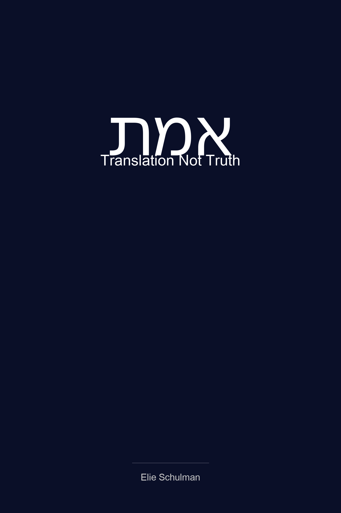

Attorney · Educator · Facilitator · Writer
Making the hidden structure of language, judgment, and learning visible.
I work where professional judgment, group process, technology, and Jewish thought meet—helping people examine the words and assumptions that quietly organize how they think and act.
About My WorkAbout
Elie Schulman
I am an attorney, educator, group facilitator, writer, and the founder of Cohort Learning Labs. Across these roles, I return to the same practical question: what becomes possible when people can see the language, assumptions, relationships, and decision structures already shaping their work?
My legal background keeps the work attentive to evidence, responsibility, and judgment. My work in education and group process focuses on how people learn together, especially when technology changes faster than shared understanding. My writing explores related questions through Jewish texts, translation, and intellectual history.
Based in Beit Shemesh, Israel, I work with people and organizations in Israel and the United States.
Professional Work
Collaborative learning and implementation in the age of AI
Through Cohort Learning Labs, I help professional teams understand their work, identify useful AI opportunities, build practical workflows, and develop the shared capacity to use those systems responsibly. The emphasis is not on novelty for its own sake, but on technology in the context of language, group process, and human judgment.
Free Chapter
Read the opening

Emes: Translation Not Truth
Every English translation of Maimonides renders the Hebrew word אֱמֶת as "truth." That rendering sends you somewhere you didn't intend to go. This book begins with a translation problem — and follows it into questions about existence, knowledge, disagreement, and what any human being can claim to know.
A free excerpt · PDF
Read the opening chapter as a free PDF.
Download Chapter 1Direct PDF download · No email address required
Writing
Lines of inquiry
My writing returns to a connected set of questions: how translation carries assumptions, how inherited categories guide judgment, and how people learn to see the structures shaping an argument, a relationship, or a group.
Jewish texts and translation
What becomes visible when familiar translations are tested against Hebrew vocabulary, context, and the intellectual worlds in which a text was written.
Language and judgment
How words, categories, and unstated assumptions organize professional and intellectual decisions without determining them.
Learning and group life
How people think together, how groups respond to uncertainty, and how technology changes the conditions under which shared understanding develops.